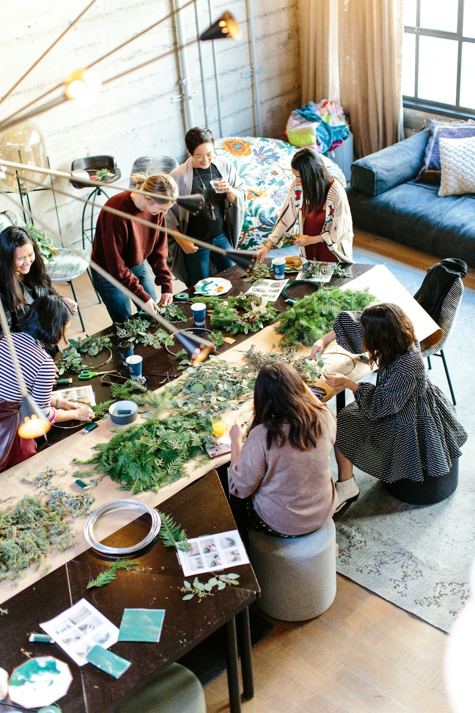

의미 있는 모임이 모여, 따뜻한 변화를 만든다
소셜그로브는 나노 커뮤니티 트렌드에 맞춘
함께 만들고 연결되는 참여형 소셜 플랫폼입니다.
Welcome
혼자 있는 시간이 많아진 요즘, 진짜 의미 있는 모임을 찾는 사람들이 늘고 있어요. 소셜그로브는 그런 사람들을 위한 모임입니다.
단순히 얼굴을 마주하는 게 아니라, 함께 손으로 무언가를 만들며 이야기를 나누고, 취향을 공유하고, 작은 성취감을 함께 느낍니다.

“하나는 내가, 하나는 우리 마음을 담아 기부해요.” (선택)Explore
각 메뉴에서 소셜그로브를 더 깊이 들여다볼 수 있어요.
소셜그로브의 약속
소셜링에서 생긴 수익의 일부는 늘 기부로 이어집니다. 만든 결과물 하나는 내가, 하나는 마음을 담아 기부처에 전해요. (선택)
기부가 이뤄지는 방식 보기함께해요
의미 있는 모임이 모여, 따뜻한 변화를 만듭니다.
참여 신청 시 가장 가까운 그로브 소식을 보내드려요.